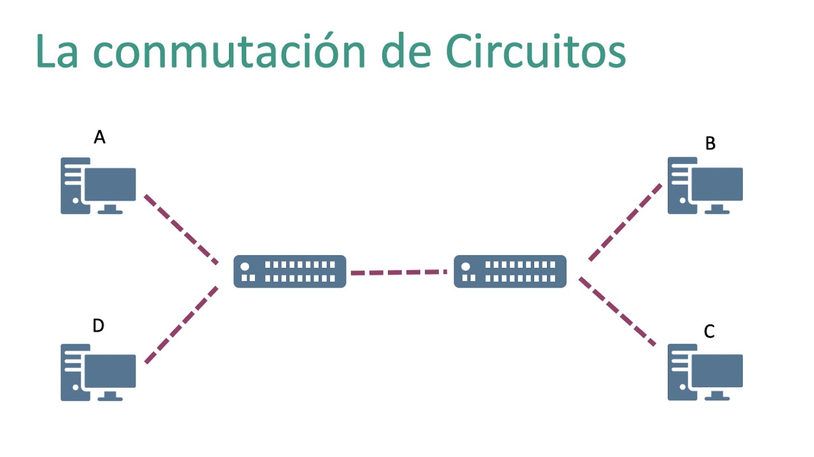
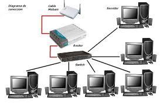

Introducción
La conmutación de circuitos es una técnica en la que se establece un canal exclusivo entre emisor y receptor durante toda la comunicación. Según Stallings, este tipo de conmutación fue la base de la red telefónica pública conmutada.
Desarrollo
Una vez establecido el circuito, los recursos permanecen reservados hasta que la comunicación finaliza. Tanenbaum explica que esto garantiza una calidad constante, pero resulta ineficiente cuando no se transmite información de manera continua. Autores como Forouzan destacan que esta técnica ofrece bajo retardo y alta confiabilidad.


Conclusión
En conclusión, la conmutación de circuitos proporciona una comunicación estable, aunque con un uso poco eficiente de los recursos.